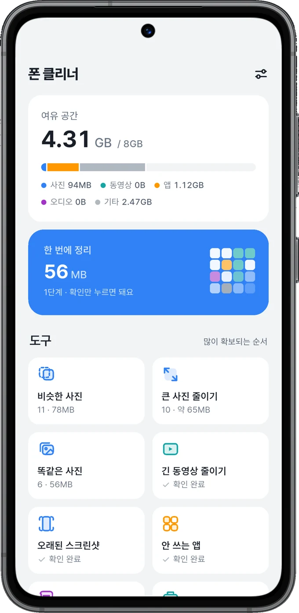
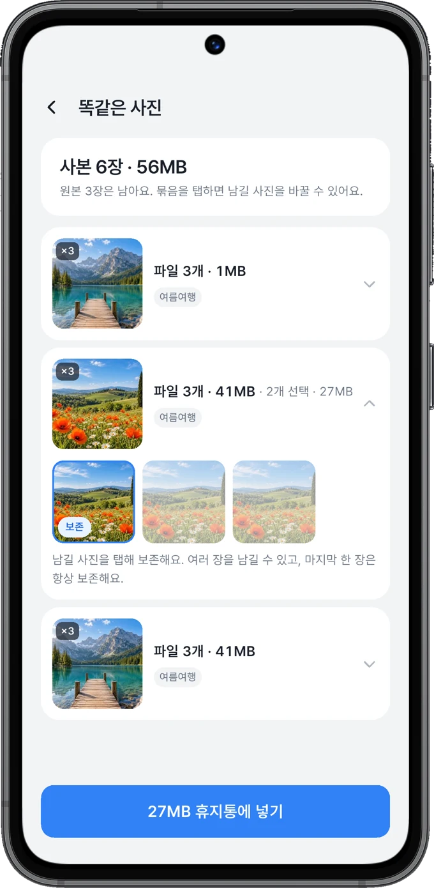

같은 사진, 한곳에 모아서
똑같거나 비슷한 사진을 비교하고
마음에 드는 사진은 보존해요.
H1SOFT · 일상의 도구
쌓여 있는 사진, 커다란 동영상.
남길 건 남기고, 비울 것만 가볍게 정리해요.
Android용 · 사진은 내 기기 안에서 처리해요


비우는 일도, 마음 편하게
무작정 지우지 않아요.
직접 보고, 고르고, 정리해요.
똑같거나 비슷한 사진을 비교하고
마음에 드는 사진은 보존해요.
예상 절약량과 줄이기 설정을 확인하고
원하는 파일만 골라 줄여요.
오래된 스크린샷, 큰 파일, 안 쓰는 앱까지.
정리가 필요한 곳부터 살펴봐요.
휴지통에 옮긴 사진은 30일 동안
보관 기간 안에 복원할 수 있어요.
앱 화면 살펴보기
남길 사진을 고르는 순간부터, 다시 꺼내는 순간까지.
같은 사진은 모아 보고, 남길 사진을 골라요.
원본과 비교하면서 원하는 화질을 정해요.
사진을 고르면 예상 절약량이 보여요.
사진부터 큰 파일까지, 한곳에서 살펴봐요.
보관 기간 안에 사진을 다시 꺼낼 수 있어요.
옆으로 넘겨보세요. 화면을 누르면 크게 볼 수 있어요.
01 / 05내 사진은, 내 폰 안에
사진 분석과 줄이기는 기기 안에서 처리해요.
내 사진을 외부 서버로 보내지 않아요.
정리할 항목도, 남길 사진도 직접 골라요.
휴지통으로 옮기기 전에는 한 번 더 확인해요.
궁금한 점이 있나요?
아니요. 폰 클리너가 정리할 항목을 찾아주면, 직접 확인하고 정리할 항목을 골라요. 휴지통으로 옮기기 전에는 Android 확인 창이 표시돼요. 직접 빠른 정리 권한을 켠 경우에는 확인 방식이 달라질 수 있어요.
선택한 설정에 따라 해상도와 압축 정도가 달라져요. 사진 줄이기 화면에서 원본과 비교하고, 예상 절약량을 확인한 뒤 적용할 수 있어요. 중요한 사진은 충분히 비교한 뒤 선택해 주세요.
30일 보관 기간 안에는 휴지통에서 복원할 수 있어요. 휴지통을 직접 비우거나 보관 기간이 지나면 복원할 수 없어요.
앱 데이터는 남기고 앱 본체의 공간을 비우는 기능이에요. 나중에 다시 설치해 이어서 사용할 수 있어요. 보관 기능은 기기와 Android 버전, 앱에 따라 지원 여부가 달라요.
Android 11 이상을 지원해요. 사진·동영상 접근 등 필요한 권한을 허용하면 해당 정리 도구를 사용할 수 있어요. Google Play 출시를 준비하고 있어요.